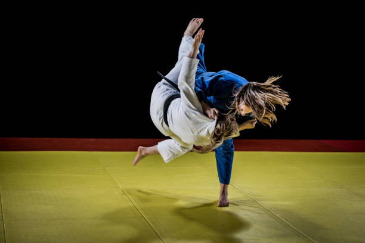
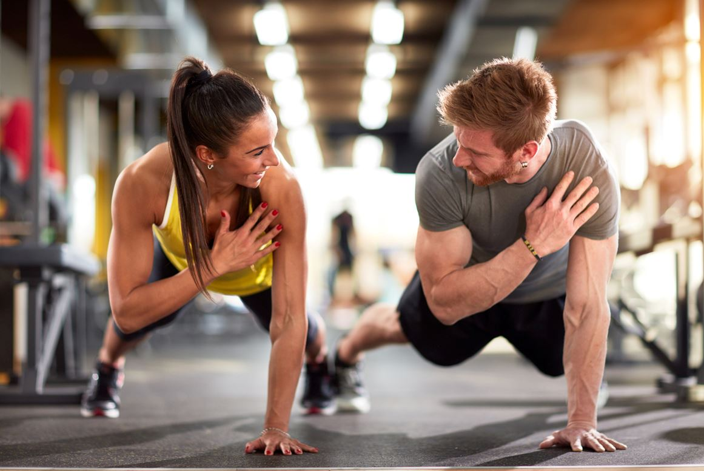
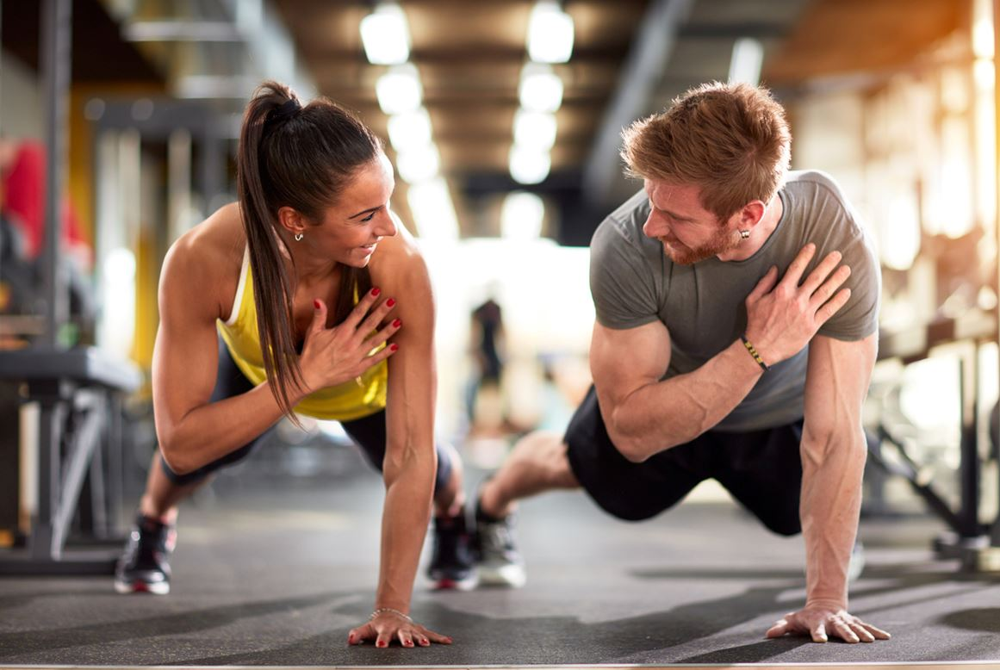

Art Martiaux: Judo🥋 & Karaté🥋


J'aime les sports de combats. Comme tous les sports, les arts martiaux permettent de travailler et d'entretenir son physique. On gagne en force, en agilité, en endurance, en souplesse et tout aussi important, on renforce le mental et développe la confiance en soie.
"Un esprit sain dans un corps sain".
 
